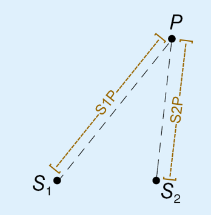

干涉本章節中，我們將以光和水波介紹波的干涉現象。 |
|
引言兩列或以上的波相交時，便會發生干涉 。 |
|
在進入教學前，你可以先游玩以下的游戲。 |
|
根據叠加原理，當一個波峯與另一個波峯重疊時，會疊加成更高的波峯；而一個波峯與一個波谷重疊時，兩者會互相抵消。 |
|
干涉現象原理我們發現， |
|
程差與相消干涉的關係我們可以利用程差找出某一位置是否發生相長干涉或相消干涉， 而程差即求出該點與兩個波源距離的差 以左圖爲例，P點的程差為S1P-S2P。 當我們求出的程差為波長（ג）的整數倍，即該點發生相長干涉。 當我們求出的程差為波長（ג）的0.5/1.5/2.5/...倍，即該點發生相消干涉。 |
|
小知識科學家透過光波的干涉現象，利用雙縫實驗得出光同時為粒子和波（波粒二象性）的結論，更因該實驗驗證了量子力學。 |
|
| 點我了解更多 | 延伸閲讀 |